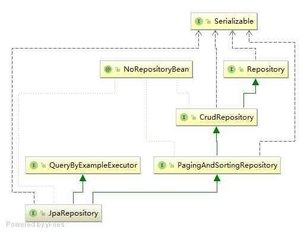
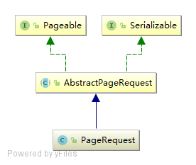

在上文中，我们谈到 JpaRepository 继承自 gingAndSortingRepository 和 QueryByExampleExecutor ，它的继承关系如下图所示：

PagingAndSortingRepository 中提供了 findAll 方法，处理分页和排序的操作。
|
CrudRepository 提供了基本的增删改查方法。
|
QueryByExampleExecutor 提供了自定义维度查询的方法。
public interface QueryByExampleExecutor<T> { |
下面我们看一下上述功能如何使用。
分页和排序
在 JPA 中实现分页和排序十分简单，PagingAndSortingRepository 中提供了相关实现。
分页时我们只需要提供一个 Pageable 的对象即可。 Pageable 是一个接口，定义了分页操作所需要的信息：
public interface Pageable { |
Spring JPA 中提供了一个默认的 Pageable 实现 PageRequest ，它的继承关系如下图所示：

AbstractPageRequest 是一个 Pageable 的抽象类实现，从构造函数中我们可以看到，页码是从第 0 页开始的：
public AbstractPageRequest(int page, int size) { |
PageRequest 除了 page 和 size 的参数外，还可以指定排序相关的参数：
public PageRequest(int page, int size, Direction direction, String... properties) { |
一个简单的分页和排序的使用例子：
public Page<User> queryPage(Integer page, Integer size) { |
使用 QueryByExampleExecutor 查询
基于 QueryByExampleExecutor 可以实现自定义维度的查询。
public List<User> getUserByPhone(String phone) { |